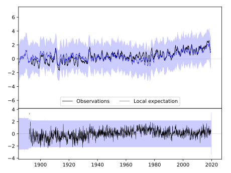
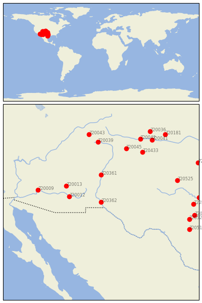
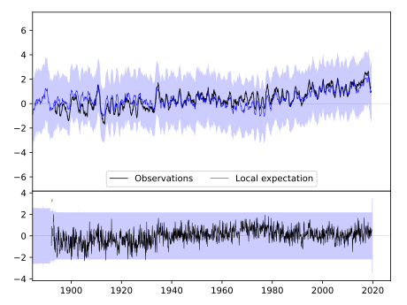
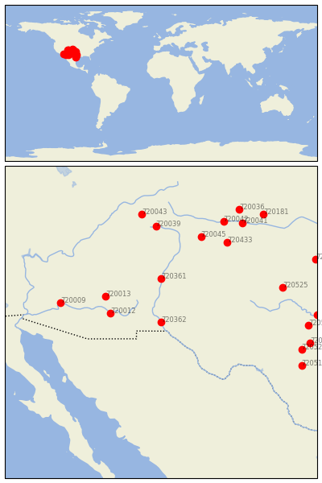

STATE UNIV [USA]
 


| Neighbour | Name | Country | Distance | Lon/Lat | Years |
|---|
| 720362 | STATE UNIV | USA | 0 | -106.8, 32.3 | 1892-2019 |
| 720012 | SAFFORD AGRICULTRL C | USA | 277 | -109.7, 32.8 | 1893-2019 |
| 720361 | LOS LUNAS 3 SSW | USA | 277 | -106.8, 34.8 | 1891-2019 |
| 720013 | WHITERIVER 1 SW | USA | 341 | -110.0, 33.8 | 1871-2019 |
| 720009 | BUCKEYE | USA | 555 | -112.6, 33.4 | 1893-2019 |
| 720045 | TRINIDAD | USA | 583 | -104.5, 37.2 | 1886-2019 |
| 720039 | HERMIT 7 ESE | USA | 612 | -107.1, 37.8 | 1893-2019 |
| 720433 | KENTON | USA | 618 | -103.0, 36.9 | 1893-2019 |
| 720525 | QUANAH 2 SW | USA | 687 | -99.8, 34.3 | 1891-2019 |
| 720043 | MONTROSE #2 | USA | 696 | -107.9, 38.5 | 1885-2019 |
| 720042 | LAS ANIMAS | USA | 722 | -103.2, 38.1 | 1867-2019 |
| 720041 | HOLLY | USA | 764 | -102.1, 38.0 | 1893-2019 |
| 720521 | LLANO | USA | 788 | -98.7, 30.7 | 1891-2019 |
| 720516 | DUBLIN 2SE | USA | 799 | -98.3, 32.1 | 1893-2019 |
| 720513 | BOERNE | USA | 819 | -98.7, 29.8 | 1878-2019 |
| 720519 | LAMPASAS | USA | 824 | -98.2, 31.1 | 1888-2019 |
| 720036 | CHEYENNE WELLS | USA | 829 | -102.3, 38.8 | 1889-2019 |
| 720527 | WEATHERFORD | USA | 844 | -97.8, 32.7 | 1893-2019 |
| 720181 | SCOTT CITY | USA | 872 | -100.9, 38.5 | 1889-2019 |
| 720434 | KINGFISHER | USA | 911 | -97.9, 35.9 | 1893-2019 |